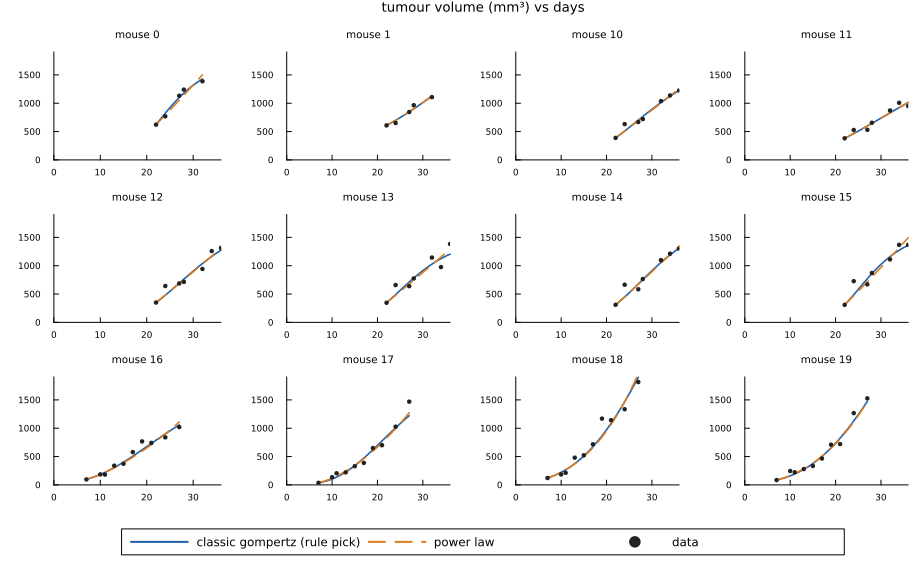
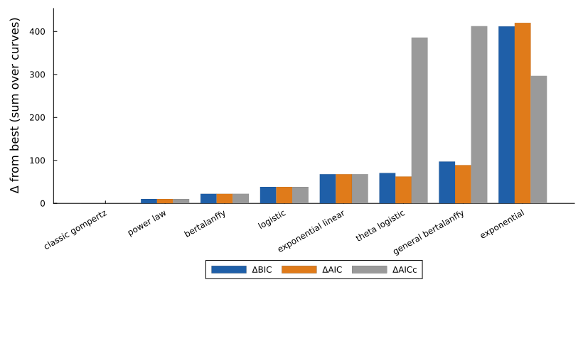
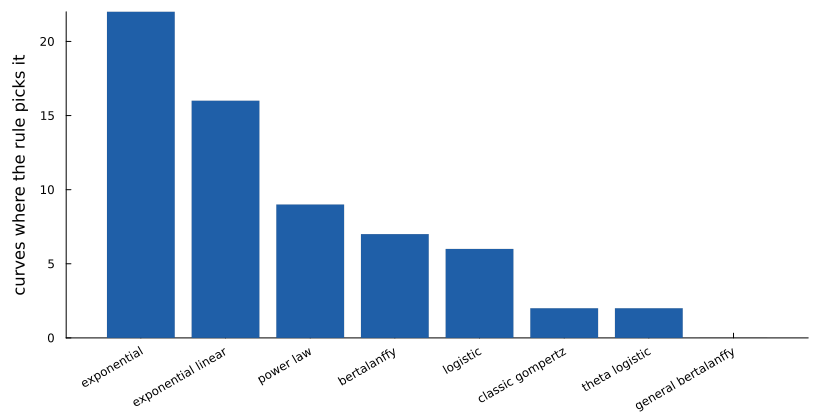
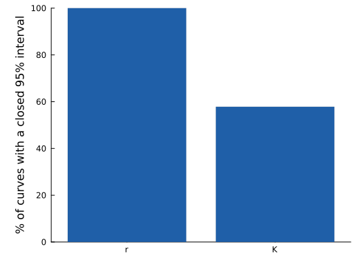
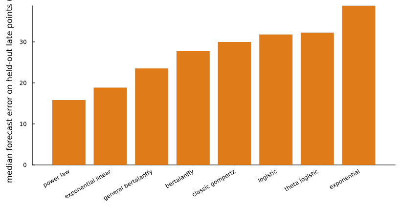

LM2-4LUC+ breast xenograft volumes (vehicle)
The paper found: For the breast tumours, Gompertz and exponential-linear captured the dynamics best. Exponential-linear also forecast best, with prediction scores of 80% or more up to 12 days ahead.
This page found: Gompertz is the pick, matching the paper. Exponential-linear is far behind (ΔBIC 68), and power law forecasts best (median error 16%).
Why they differ / caveats: Gompertz agrees; exponential-linear does not. The paper used 34 mice, while the public Zenodo release used here has 64, so the data are not identical. Error model and forecast scoring also differ.
Benzekry S et al. (2014) PLoS Comput Biol 10(8):e1003800; data Zenodo 3574531 (Mastri, Tracz, Ebos) · doi:10.5281/zenodo.3574531 · source: https://doi.org/10.5281/zenodo.3574531 · licence: CC BY 4.0
Orthotopic LM2-4 breast tumours (a metastatic MDA-MB-231 derivative) in 64 mice, measured with calipers as volume (mm³). Benzekry and colleagues fitted a panel of classic laws to breast tumours from this model and found Gompertz and exponential-linear growth described them best.
Same mice as the Ebos vehicle arm. Every row of this file matches the vehicle (untreated) arm of the Ebos sunitinib dataset, so the two are one experiment, not two. The showcase counts them once: this page covers the untreated curves and the Ebos page covers only the treated arms.
How this setup differs from the paper. Each curve starts from its own first measurement, the error model is the showcase's proportional one and selection uses the 2-BIC rule. With those choices the dataset-level pick is still Gompertz, which agrees with the paper. Per mouse the picture is more mixed: short curves often prefer exponential or exponential-linear growth, because a few points cannot show the slowing that Gompertz needs.
Model comparison
Each of the 64 curves was fitted separately with every model. Criteria are summed over curves and shown as differences from the best model. The rule picks the model with the fewest parameters within 2 BIC of the best: classic gompertz.
| Model | k | ΔBIC | ΔAIC | ΔAICc | Curves where picked |
|---|---|---|---|---|---|
| classic gompertz (pick) | 2 | 0.0 | 0.0 | 0.0 | 2 |
| power law | 2 | 10.2 | 10.2 | 10.2 | 9 |
| bertalanffy | 2 | 22.2 | 22.2 | 22.2 | 7 |
| logistic | 2 | 38.4 | 38.4 | 38.4 | 6 |
| exponential linear | 2 | 67.9 | 67.9 | 67.9 | 16 |
| theta logistic | 3 | 70.6 | 62.4 | 385.8 | 2 |
| general bertalanffy | 3 | 97.2 | 89.0 | 412.4 | 0 |
| exponential | 1 | 411.9 | 420.2 | 296.6 | 22 |



Identifiability of the pick
Profile likelihood on every curve (each parameter fixed on a grid, the others refitted; 95% cutoff χ²₁ = 3.84). A parameter counts as identifiable on a curve when its interval closes inside the bounds.
| Parameter | Median estimate | Curves identifiable (%) |
|---|---|---|
| r | 0.070 | 100 |
| K | 2640.454 | 58 |

Forecast check
Each model was refitted on the first 70% of each curve and asked to predict the rest.
| Model | Median relative error (%) | Predictions within 20% (%) |
|---|---|---|
| power law | 15.8 | 57.7 |
| exponential linear | 18.8 | 51.9 |
| general bertalanffy | 23.5 | 45.1 |
| bertalanffy | 27.8 | 40.1 |
| classic gompertz | 30.0 | 35.3 |
| logistic | 31.8 | 34.0 |
| theta logistic | 32.3 | 31.3 |
| exponential | 38.8 | 27.7 |

Package diagnostics
The package's built-in tools, run on every model in the panel on the same 12 evenly spaced curves, each starting from its showcase fit: fisher_information, profile_likelihood, bootstrap_joint_fit (residual, 40 resamples) and synthetic_recovery_benchmark (20 simulated data sets per curve), plus 5-fold cross-validation. Script: showcase/analyses/package_checks.jl.
The 10% proportional error sets the weights; its overall size is estimated from each fit's residuals (the same maximum-likelihood scale the BIC and the showcase profile use). Here the residual scatter is a median 1.2× the nominal 10%, so every interval and simulated data set is calibrated to the scatter the data really have.
For classic gompertz, the Fisher (Wald) interval is within a factor of 1.5 of the profile interval for 12 of 24 parameter-curve pairs. Where they disagree, trust the profile and bootstrap intervals: the Fisher interval assumes the likelihood is quadratic around the estimate.
Every model (medians over curves and parameters)
| Model | Parameters | Fisher agrees with profile (%) | Profile interval closes (%) | Bootstrap 95% width (% of estimate) | Synthetic recovery: abs. bias (%) | Cross-validation: held-out error (%) | Held-out points within 20% (%) | Folds converged (%) |
|---|---|---|---|---|---|---|---|---|
| exponential | 1 | 100 | 100 | 1332.1 | 0.7 | 16.7 | 56.3 | 100.0 |
| logistic | 2 | 71 | 96 | 5917.1 | 4.0 | 11.1 | 70.8 | 100.0 |
| classic gompertz (pick) | 2 | 50 | 96 | 15909.6 | 20.3 | 11.6 | 76.4 | 100.0 |
| theta logistic | 3 | 11 | 67 | 16469.5 | 16.2 | 11.3 | 77.8 | 100.0 |
| bertalanffy | 2 | 50 | 71 | 19028.7 | 15.9 | 10.8 | 76.4 | 100.0 |
| general bertalanffy | 3 | 3 | 39 | 12851.6 | 26.9 | 10.8 | 74.6 | 100.0 |
| power law | 2 | 42 | 62 | 18037.4 | 24.6 | 10.8 | 73.2 | 100.0 |
| exponential linear | 2 | 58 | 75 | 2554.7 | 1.3 | 10.1 | 69.0 | 100.0 |
Profile interval closes: the 95% interval ends inside the parameter bounds on both sides. Cross-validation: the first point is the initial condition and stays in every training set; the others are dealt into 5 interleaved folds, each refitted with the showcase objective and predicted from the full curve, so this tests interpolation. A fold counts as converged when its fit reaches a weighted error per point within 4× the full-curve fit's (retried with up to 32 starts); folds that never do are not scored. The forecast check above tests extrapolation.
The pick, classic gompertz, parameter by parameter. 95% interval width as median % of the estimate (in brackets: share of curves where the interval closes), and synthetic recovery.
| Parameter | Fisher (Wald) | Package profile | Showcase profile | Bootstrap | Recovery: median bias (% of truth) | Recovery: median RMSE (% of truth) |
|---|---|---|---|---|---|---|
| r | 96.6 | 131.8 (100%) | 154.0 (100%) | 124.2 | 9.1 | 36.3 |
| K | 125.8 | 305.1 (92%) | 420.5 (67%) | 182.4 | 56.4 | 150.1 |
The package profile uses the package's default grid plus points at ±0.5 to ±4 Fisher standard errors around the estimate. profile_likelihood reports the outermost grid points inside the cutoff, which reads about 20% narrow at this spacing, so the widths here interpolate the crossing between grid points. The showcase profile searches outward and bisects the crossing, and uses the exact log-likelihood ratio n·log(wSSE/wSSE₀) rather than its quadratic form, so it reads slightly wider.
Reproduce
python3 -I showcase/data/prepare.py --only benzekry2014_lm24
julia --project=showcase -t auto showcase/run_pipeline.jl --only benzekry2014_lm24Fitted with GrowthParameterEstimation.jl 0.5.5. Results: showcase/results/benzekry2014_lm24/.